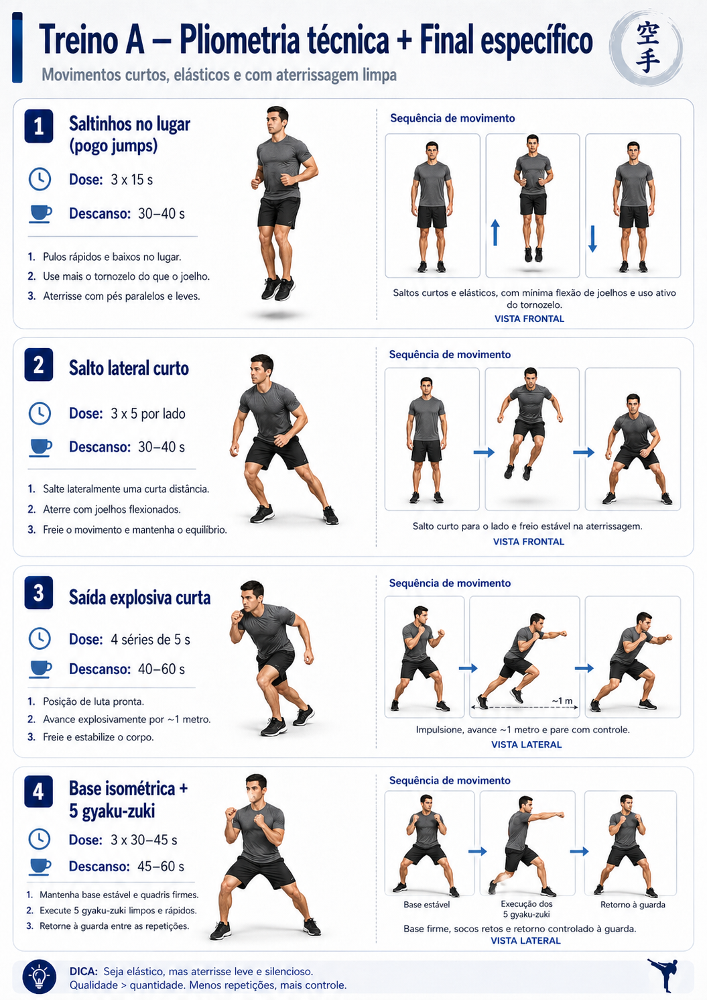
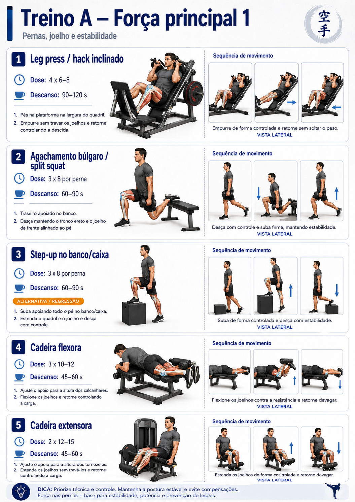
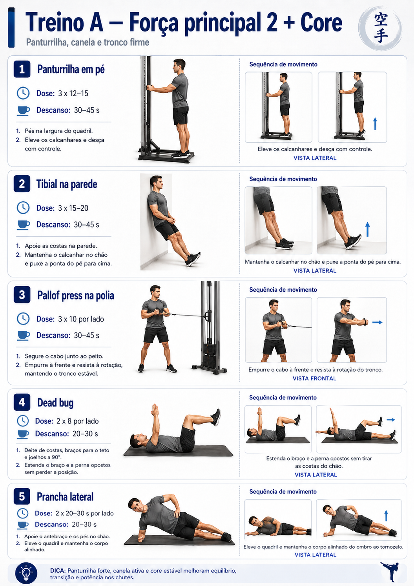

30–40 minTreino A
Base, pernas, joelho e core
Principal para kata: sustentar base, melhorar força de pernas e manter postura até o fim do kata.

Aquecimento
Imagem-guia + exercícios do bloco
Bike ou esteira leve
3 mindescanso: sem descanso
Mobilidade de tornozelo
10 por ladodescanso: troca de lado
Elevação de joelho alternada
10–20 reps totaldescanso: sem descanso
Agachamento curto controlado
10 repsdescanso: 15–20 s
Prancha alta com toque no ombro
10 toquesdescanso: 20–30 s

Pliometria técnica
Imagem-guia + exercícios do bloco
Saltinhos no lugar
3 x 15 sdescanso: 30–45 s
Salto lateral curto
3 x 5 por ladodescanso: 45–60 s
Saída explosiva curta
4 x 5 sdescanso: 45–60 s

Força principal
Imagem-guia + exercícios do bloco
Leg press / hack inclinado
4 x 6–8descanso: 90–120 s
Agachamento búlgaro / split squat
3 x 8 por pernadescanso: 60–90 s
Step-up no banco/caixa
3 x 8 por pernadescanso: 60–90 s
Cadeira flexora
3 x 10–12descanso: 45–75 s
Cadeira extensora
2 x 12–15descanso: 45–60 s
Panturrilha em pé
3 x 12–15descanso: 45–60 s
Tibial na parede
3 x 15–20descanso: 30–45 s

Core + final de kata
Imagem-guia + exercícios do bloco
Pallof press na polia
3 x 10 por ladodescanso: 30–45 s
Dead bug
2 x 8 por ladodescanso: 30–45 s
Prancha lateral
2 x 20–30 s por ladodescanso: 30–45 s
Base isométrica + 5 gyaku-zuki
3 x 30–45 sdescanso: 45–75 s